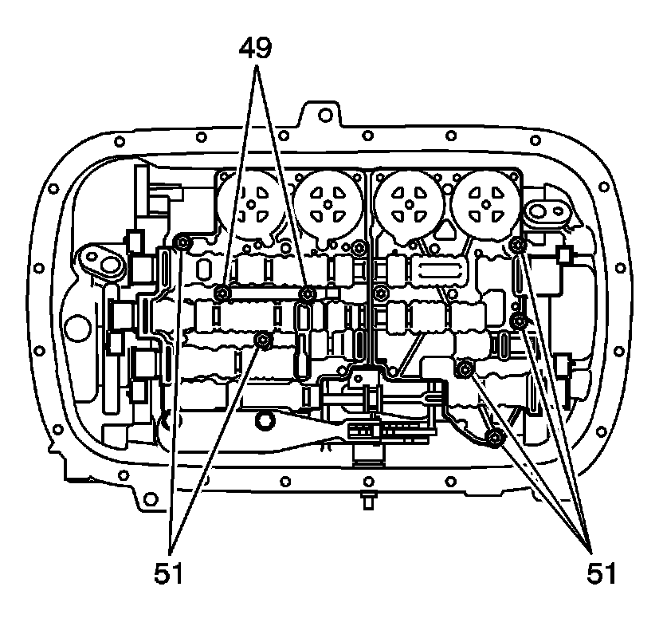
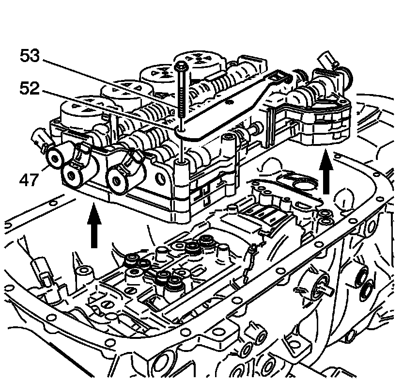
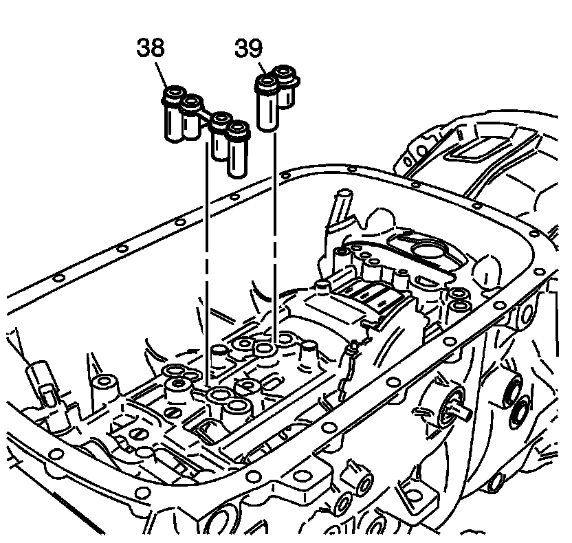

Control Valve Body Accumulator Assembly Removal
Control Valve Body Accumulator Assembly Removal

Important: Only remove the bolts called out in the graphic, there will be two remaining.
1. Remove the control valve body bolts (49, 51).

2. Remove the control valve body bolts (53).
3. Remove the manual shaft detent assembly (52).
4. Remove the control valve body (47) from the case (24).

5. Remove the center support fluid passage sleeve (38) and the overdrive clutch fluid passage sleeve (39) from the case.